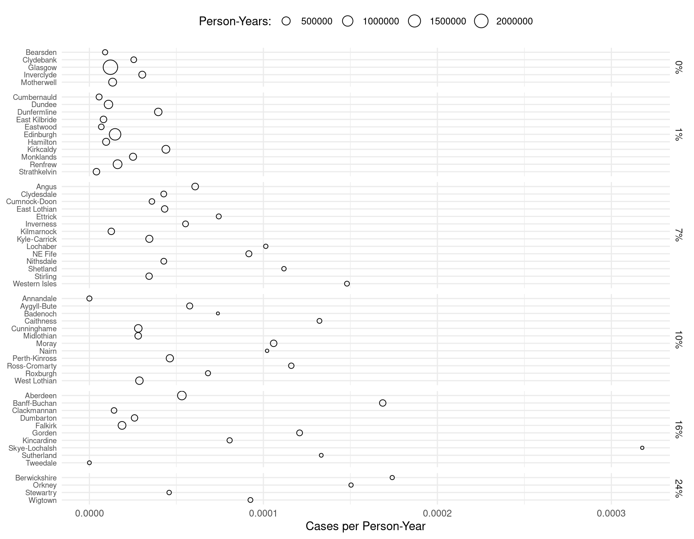
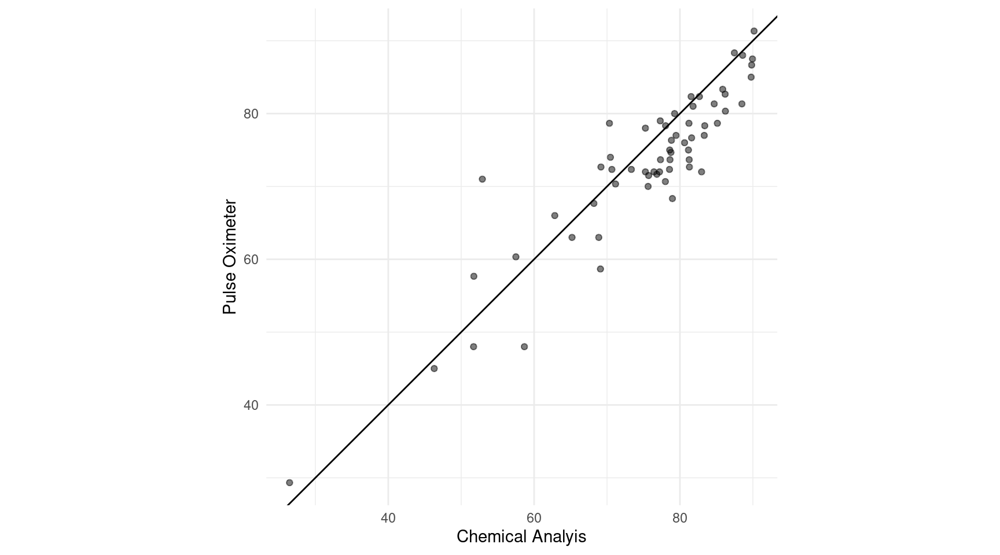
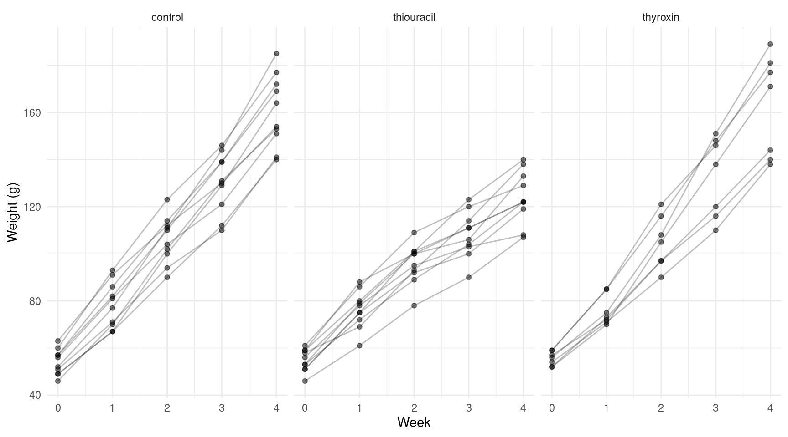

Categorical Response Variables and the Incidental Parameters Problem
Statistics 516, Homework 5 (Solutions)
You can also download a PDF copy of this homework assignment.
Lip Cancer in Scotland: The Random Effect of District
Recall the model for the lip cancer data from Scotland used in the third and fourth homework assignments. Here again is the code to process and plot the raw data showing the observed rate of lip cancer per person-year by percent of the population engaged in outdoor activity.
library(epiR)
library(dplyr)
library(ggplot2)
data(epi.SClip)
lipcancer <- epi.SClip %>%
mutate(district = factor(district, levels = rev(sort(unique(district))))) %>%
mutate(percent = paste(prop.ag, "%", sep = "")) %>%
mutate(percent = reorder(percent, prop.ag)) %>%
select(district, cases, population, percent)
p <- ggplot(lipcancer, aes(y = district, x = cases/population)) +
theme_minimal() + geom_point(aes(size = population), shape = 21) +
facet_grid(percent ~ ., scales = "free_y", space = "free_y") +
labs(y = NULL, x = "Cases per Person-Year", size = "Person-Years:") +
scale_x_continuous(labels = scales::label_number()) +
theme(axis.text.y = element_text(size = 7), legend.position = "top")
plot(p) In the previous homework assignment you noted that there may be some over-dispersion which may be due to variation in the lip cancer rate over districts other than that accounted for by the percent of the population engaged in outdoor activity. To account for that over-dispersion you used a quasi-likelihood approach to “adjust” inferences to the over-dispersion. Another approach that could be used is to specify the effect of district as a random effect.1
Estimate a Poisson regression model like you did in the third homework assignment, but this time specifying a random “main effect” for district. Report the model parameter estimates and standard errors using
summaryorlinconso that I can verify that you estimated the model correctly.Solution: Here is how to estimate this mixed effects model.
library(lme4) m <- glmer(cases ~ percent + offset(log(population)) + (1 | district), family = poisson, data = lipcancer) summary(m)Generalized linear mixed model fit by maximum likelihood (Laplace Approximation) ['glmerMod'] Family: poisson ( log ) Formula: cases ~ percent + offset(log(population)) + (1 | district) Data: lipcancer AIC BIC logLik deviance df.resid 355.7 369.9 -170.9 341.7 49 Scaled residuals: Min 1Q Median 3Q Max -1.5491 -0.4031 -0.0435 0.4107 1.4272 Random effects: Groups Name Variance Std.Dev. district (Intercept) 0.339 0.582 Number of obs: 56, groups: district, 56 Fixed effects: Estimate Std. Error z value Pr(>|z|) (Intercept) -11.0362 0.3251 -33.95 < 2e-16 *** percent1% -0.0687 0.3932 -0.17 0.86127 percent7% 1.1837 0.3723 3.18 0.00148 ** percent10% 1.1775 0.3821 3.08 0.00206 ** percent16% 1.3654 0.3915 3.49 0.00049 *** percent24% 1.8539 0.4770 3.89 0.00010 *** --- Signif. codes: 0 '***' 0.001 '**' 0.01 '*' 0.05 '.' 0.1 ' ' 1 Correlation of Fixed Effects: (Intr) prcn1% prcn7% prc10% prc16% percent1% -0.825 percent7% -0.873 0.722 percent10% -0.850 0.704 0.743 percent16% -0.830 0.688 0.725 0.707 percent24% -0.681 0.564 0.595 0.580 0.566trtools::lincon(m)estimate se lower upper tvalue df pvalue (Intercept) -11.03624 0.3251 -11.6734 -10.399 -33.9482 Inf 1.296e-252 percent1% -0.06872 0.3932 -0.8395 0.702 -0.1748 Inf 8.613e-01 percent7% 1.18368 0.3723 0.4540 1.913 3.1793 Inf 1.476e-03 percent10% 1.17750 0.3821 0.4286 1.926 3.0818 Inf 2.058e-03 percent16% 1.36544 0.3915 0.5980 2.133 3.4874 Inf 4.878e-04 percent24% 1.85392 0.4770 0.9191 2.789 3.8869 Inf 1.016e-04Using
contrastor the emmeans package, estimate the expected number of cases of lip cancer per 100K person-years for each value of the percent of the population spent in outdoor activities.Solution: Here are the estimated rates of cases of lip cancer (per 100K person-years).
library(emmeans) emmeans(m, ~percent, type = "response", offset = log(100000))percent rate SE df asymp.LCL asymp.UCL 0% 1.61 0.524 Inf 0.852 3.05 1% 1.50 0.334 Inf 0.973 2.32 7% 5.26 0.956 Inf 3.685 7.51 10% 5.23 1.051 Inf 3.526 7.75 16% 6.31 1.379 Inf 4.111 9.69 24% 10.28 3.591 Inf 5.187 20.39 Confidence level used: 0.95 Intervals are back-transformed from the log scaleIn the third homework assignment I asked you to estimate and interpret rate ratios that compared the rate of lip cancer at 1%, 7%, 10%, 16%, and 24% versus 0% of the population involved in outdoor activity. This time estimate and interpret rate ratios that compare consecutive values of the percent of the population involved in outdoor activity (i.e., 0% versus 1%, 1% versus 7%, 7% versus 10%, and so on).
Solution: I will show you a couple of ways to do this. One is to use
contrast.trtools::contrast(m, tf = exp, a = list(percent = c("1%","7%","10%","16%","24%"), population = 1), b = list(percent = c("0%","1%","7%","10%","16%"), population = 1), cnames = c("1% vs 0%", "7% vs 1%", "10% vs 7%", "16% vs 10%", "24% vs 16%"))estimate lower upper 1% vs 0% 0.9336 0.4319 2.018 7% vs 1% 3.4987 1.9964 6.132 10% vs 7% 0.9938 0.5846 1.689 16% vs 10% 1.2068 0.6750 2.157 24% vs 16% 1.6298 0.7275 3.651With a little programming effort we can avoid so much tedious typing.
pa <- sort(unique(lipcancer$percent))[2:6] pb <- sort(unique(lipcancer$percent))[1:5] trtools::contrast(m, tf = exp, a = list(percent = pa, population = 1), b = list(percent = pb, population = 1), cnames = paste(pa, "vs", pb))estimate lower upper 1% vs 0% 0.9336 0.4319 2.018 7% vs 1% 3.4987 1.9964 6.132 10% vs 7% 0.9938 0.5846 1.689 16% vs 10% 1.2068 0.6750 2.157 24% vs 16% 1.6298 0.7275 3.651The
contrastfunction in the emmeans package can also be used to do consecutive paired comparisons.emmeans::contrast(emmeans(m, ~percent, offset = log(1), type = "response"), method = "consec", infer = TRUE, adjust = "none")contrast ratio SE df asymp.LCL asymp.UCL null z.ratio p.value 1% / 0% 0.934 0.367 Inf 0.432 2.02 1 -0.175 0.8613 7% / 1% 3.499 1.002 Inf 1.996 6.13 1 4.375 <.0001 10% / 7% 0.994 0.269 Inf 0.585 1.69 1 -0.023 0.9818 16% / 10% 1.207 0.358 Inf 0.675 2.16 1 0.634 0.5261 24% / 16% 1.630 0.671 Inf 0.728 3.65 1 1.187 0.2353 Confidence level used: 0.95 Intervals are back-transformed from the log scale Tests are performed on the log scaleHere is shortcut that gives both the estimated rates and consecutive pairwise comparisons.
emmeans(m, consec ~ percent, offset = log(100000), type = "response", infer = TRUE, adjust = "none")$emmeans percent rate SE df asymp.LCL asymp.UCL null z.ratio p.value 0% 1.61 0.524 Inf 0.852 3.05 1 1.466 0.1426 1% 1.50 0.334 Inf 0.973 2.32 1 1.838 0.0661 7% 5.26 0.956 Inf 3.685 7.51 1 9.142 <.0001 10% 5.23 1.051 Inf 3.526 7.75 1 8.229 <.0001 16% 6.31 1.379 Inf 4.111 9.69 1 8.426 <.0001 24% 10.28 3.591 Inf 5.187 20.39 1 6.675 <.0001 Confidence level used: 0.95 Intervals are back-transformed from the log scale Tests are performed on the log scale $contrasts contrast ratio SE df asymp.LCL asymp.UCL null z.ratio p.value 1% / 0% 0.934 0.367 Inf 0.432 2.02 1 -0.175 0.8613 7% / 1% 3.499 1.002 Inf 1.996 6.13 1 4.375 <.0001 10% / 7% 0.994 0.269 Inf 0.585 1.69 1 -0.023 0.9818 16% / 10% 1.207 0.358 Inf 0.675 2.16 1 0.634 0.5261 24% / 16% 1.630 0.671 Inf 0.728 3.65 1 1.187 0.2353 Confidence level used: 0.95 Intervals are back-transformed from the log scale Tests are performed on the log scaleNote that the value of the offset does not affect the rate ratios, but it does affect the estimated rates as I had to specify it here to give the estimated number of cases of lip cancer per 100K person-years. Here is how we could interpret these rate ratios.
The estimated rate of cases of lip cancer is about 6.6% less at 1% percent of the population engaged in outdoor activity than it is at 0%.
The estimated rate of cases of lip cancer is about 3.5 times higher (250% higher) at 7% percent of the population engaged in outdoor activity than it is at 1%.
The estimated rate of cases of lip cancer is about 1% less at 10% percent of the population engaged in outdoor activity than it is at 7%.
The estimated rate of cases of lip cancer is about 1.21 times higher (21% higher) at 16% percent of the population engaged in outdoor activity than it is at 10%.
The estimated rate of cases of lip cancer is about 1.63 times higher (63% higher) at 24% percent of the population engaged in outdoor activity than it is at 16%.
It may be worth noting that only one of these rate ratios is statistically significant at conventional significance levels. We can also “flip” the rate ratios to put the lower percent in the numerator of the ratio.
emmeans(m, consec ~ percent, offset = log(100000), type = "response", infer = TRUE, adjust = "none", reverse = TRUE)$contrastscontrast ratio SE df asymp.LCL asymp.UCL null z.ratio p.value 0% / 1% 1.071 0.4212 Inf 0.496 2.315 1 0.175 0.8613 1% / 7% 0.286 0.0818 Inf 0.163 0.501 1 -4.375 <.0001 7% / 10% 1.006 0.2724 Inf 0.592 1.710 1 0.023 0.9818 10% / 16% 0.829 0.2456 Inf 0.464 1.481 1 -0.634 0.5261 16% / 24% 0.614 0.2525 Inf 0.274 1.375 1 -1.187 0.2353 Confidence level used: 0.95 Intervals are back-transformed from the log scale Tests are performed on the log scaleWe can interpret these rate ratios as follows.
The estimated rate of cases of lip cancer is about 1.07 times higher (7% higher) at 0% percent of the population engaged in outdoor activity than it is at 1%.
The estimated rate of cases of lip cancer is about 73% lower at 1% percent of the population engaged in outdoor activity than it is at 7%.
The estimated rate of cases of lip cancer is about 1.006 times higher (0.6% higher) at 7% percent of the population engaged in outdoor activity than it is at 10%.
The estimated rate of cases of lip cancer is about 17% lower at 10% percent of the population engaged in outdoor activity than it is at 16%.
The estimated rate of cases of lip cancer is about 39% lower at 16% percent of the population engaged in outdoor activity than it is at 24%.
Comparing Methods of Measuring Blood Oxygen Saturation
The data frame ox in the MethComp
package is from a study comparing two methods of measuring blood oxygen
saturation: chemical analysis or using a pulse oximeter.2 Measurements were
taken using both methods for each of 61 children. Multiple readings
(replicates) were taken using each method in quick succession. For most
children there were three replicates per method for a total of six
measurements per child. Here are first few observations, sorted by the
child (item).
library(dplyr)
library(tibble) # to use the remove_rownames function
library(MethComp)
data(ox)
ox <- ox %>% arrange(item) %>% remove_rownames()
head(ox, 12) meth item repl y
1 CO 1 1 78.0
2 CO 1 2 76.4
3 CO 1 3 77.2
4 pulse 1 1 71.0
5 pulse 1 2 72.0
6 pulse 1 3 73.0
7 CO 2 1 68.7
8 CO 2 2 67.6
9 CO 2 3 68.3
10 pulse 2 1 68.0
11 pulse 2 2 67.0
12 pulse 2 3 68.0Note that here meth is the method of measuring oxygen
saturation (CO is chemical analysis and pulse
is pulse oximeter), item identifies the child,
repl is the replicate, and y is the
measurement of oxygen saturation. The plot below shows the raw data.
library(ggplot2)
p <- ggplot(ox, aes(y = factor(item), x = y, color = meth)) +
theme_minimal() + geom_point(alpha = 0.5) + scale_y_discrete(limits = rev) +
labs(y = "Child Identifier", x = "Oxygen Saturation (Percent)", color = "Method")
plot(p) The plot shows some evidence of an “effect” for the child — i.e.,
children may naturally vary with respect to their average blood oxygen
saturation. This can induce a lack of independence of the observations
among those from the same child. We can also see this in a scatter plot
of the average measurement for each child by method.3
The plot shows some evidence of an “effect” for the child — i.e.,
children may naturally vary with respect to their average blood oxygen
saturation. This can induce a lack of independence of the observations
among those from the same child. We can also see this in a scatter plot
of the average measurement for each child by method.3
library(tidyr) # to use the pivot_wider function
oxaverages <- ox %>% group_by(item, meth) %>%
summarize(y = mean(y)) %>% pivot_wider(names_from = meth, values_from = y)
p <- ggplot(oxaverages, aes(x = CO, y = pulse)) + theme_minimal() +
geom_abline(intercept = 0, slope = 1) +
geom_point(alpha = 0.5) + coord_fixed() +
labs(x = "Chemical Analyis", y = "Pulse Oximeter")
plot(p) The lack of independence is suggested by the strong correlation between the average measurements. Here you will consider some different ways to account for this (or not).
Estimate the following four linear models with the oxygen saturation measurement as the response variable and the method of measurement as an explanatory variable: a model that ignores the effect of child (using the
lmfunction), a marginal model estimated using generalized estimating equations that attempts to account for the lack of independence of observations from the same child (using thegeeglmfunction), a fixed effects model with child used as a factor explanatory variable (using thelmfunction), and a mixed effects model with a random “main effect” for child (using thelmerfunction). For each model report the parameter estimates and standard errors using either thesummaryorlinconfunction so that I can verify that you estimated the model correctly. When usinggeeglmbe sure to use the sorted data frame (see the code above) and an exchangeable correlation structure.Solution: First here is the model with no effect for child.
m1 <- lm(y ~ meth, data = ox) trtools::lincon(m1)estimate se lower upper tvalue df pvalue (Intercept) 75.658 0.9002 73.888 77.42864 84.046 352 4.824e-235 methpulse -2.477 1.2731 -4.981 0.02639 -1.946 352 5.245e-02Here is the marginal model (note that the normal distribution and identity link function are the defaults).
library(geepack) m2 <- geeglm(y ~ meth, family = gaussian(link = identity), id = item, corstr = "exchangeable", data = ox) trtools::lincon(m2)estimate se lower upper tvalue df pvalue (Intercept) 75.650 1.5175 72.665 78.634 49.85 352 1.381e-161 methpulse -2.477 0.6385 -3.733 -1.222 -3.88 352 1.248e-04Here is the fixed effects model with a fixed effect for child. Note that I have trimmed the output a bit since there are 60 indicator variables for 61 levels of
item.m3 <- lm(y ~ meth + factor(item), data = ox) trtools::lincon(m3)[1:5,]estimate se lower upper tvalue df pvalue (Intercept) 75.839 2.0553 71.7937 79.884 36.900 292 5.841e-112 methpulse -2.477 0.5307 -3.5218 -1.433 -4.668 292 4.632e-06 factor(item)2 -6.667 2.8823 -12.3393 -0.994 -2.313 292 2.142e-02 factor(item)3 5.350 2.8823 -0.3227 11.023 1.856 292 6.444e-02 factor(item)4 -10.500 2.8823 -16.1727 -4.827 -3.643 292 3.188e-04And here is the mixed effects model.
m4 <- lmer(y ~ meth + (1 | item), data = ox) trtools::lincon(m4)estimate se lower upper tvalue df pvalue (Intercept) 75.650 1.4546 72.799 78.501 52.009 Inf 0.000e+00 methpulse -2.477 0.5307 -3.517 -1.437 -4.669 Inf 3.033e-06For each of the four models you estimated above, estimate (a) the expected blood oxygen saturation observed for each method, and (b) the difference in the expected blood oxygen saturation between the two methods. This can be done using
lincon,contrast, or with the emmeans package, but be sure that you provide estimates and standard errors.Solution: I will use the emmeans package. I am going to use a shortcut that provides the answers to both (a) and (b).
emmeans(m1, pairwise ~ meth, infer = TRUE) # ignore$emmeans meth emmean SE df lower.CL upper.CL t.ratio p.value CO 75.7 0.9 352 73.9 77.4 84.050 <.0001 pulse 73.2 0.9 352 71.4 75.0 81.290 <.0001 Confidence level used: 0.95 $contrasts contrast estimate SE df lower.CL upper.CL t.ratio p.value CO - pulse 2.48 1.27 352 -0.0264 4.98 1.946 0.0524 Confidence level used: 0.95emmeans(m2, pairwise ~ meth, infer = TRUE) # marginal$emmeans meth emmean SE df asymp.LCL asymp.UCL z.ratio p.value CO 75.7 1.52 Inf 72.7 78.6 49.850 <.0001 pulse 73.2 1.39 Inf 70.5 75.9 52.740 <.0001 Covariance estimate used: vbeta Confidence level used: 0.95 $contrasts contrast estimate SE df asymp.LCL asymp.UCL z.ratio p.value CO - pulse 2.48 0.638 Inf 1.23 3.73 3.880 0.0001 Confidence level used: 0.95emmeans(m3, pairwise ~ meth, infer = TRUE) # fixed effect$emmeans meth emmean SE df lower.CL upper.CL t.ratio p.value CO 75.7 0.378 292 74.9 76.4 200.080 <.0001 pulse 73.2 0.378 292 72.4 73.9 193.530 <.0001 Results are averaged over the levels of: item Confidence level used: 0.95 $contrasts contrast estimate SE df lower.CL upper.CL t.ratio p.value CO - pulse 2.48 0.531 292 1.43 3.52 4.668 <.0001 Results are averaged over the levels of: item Confidence level used: 0.95emmeans(m4, pairwise ~ meth, infer = TRUE) # random effect$emmeans meth emmean SE df lower.CL upper.CL t.ratio p.value CO 75.7 1.45 64.2 72.7 78.6 52.010 <.0001 pulse 73.2 1.45 64.2 70.3 76.1 50.310 <.0001 Degrees-of-freedom method: kenward-roger Confidence level used: 0.95 $contrasts contrast estimate SE df lower.CL upper.CL t.ratio p.value CO - pulse 2.48 0.531 292 1.43 3.52 4.669 <.0001 Degrees-of-freedom method: kenward-roger Confidence level used: 0.95Note that for the fixed effects model the estimates of the expected blood oxygen saturation for each method are averaged over the children. They can vary from child to child as seen below which shows the estimates for the first three children.
emmeans(m3, ~ meth | item, at = list(item = 1:3))item = 1: meth emmean SE df lower.CL upper.CL CO 75.8 2.06 292 71.8 79.9 pulse 73.4 2.06 292 69.3 77.4 item = 2: meth emmean SE df lower.CL upper.CL CO 69.2 2.06 292 65.1 73.2 pulse 66.7 2.06 292 62.6 70.7 item = 3: meth emmean SE df lower.CL upper.CL CO 81.2 2.06 292 77.1 85.2 pulse 78.7 2.06 292 74.7 82.8 Confidence level used: 0.95The estimate of the differences in these expectations, however, do not depend on the child.
emmeans(m3, pairwise ~ meth | item, at = list(item = 1:3), infer = TRUE)$contrastitem = 1: contrast estimate SE df lower.CL upper.CL t.ratio p.value CO - pulse 2.48 0.531 292 1.43 3.52 4.668 <.0001 item = 2: contrast estimate SE df lower.CL upper.CL t.ratio p.value CO - pulse 2.48 0.531 292 1.43 3.52 4.668 <.0001 item = 3: contrast estimate SE df lower.CL upper.CL t.ratio p.value CO - pulse 2.48 0.531 292 1.43 3.52 4.668 <.0001 Confidence level used: 0.95Compare the parameter estimates and standard errors you obtained for the quantities you estimated in the previous problem across the four models. Discuss briefly what did and did not change (much).
Solution: The estimates of \(\beta_0\) and \(\beta_1\) are very similar across the four method, but there are some differences in the standard errors. This is also true when estimating the expected response for each method and the difference in the expected response between these two methods. The standard errors from the first approach which ignores the effect of child, which tend to be smaller for the expected response but larger for the difference, should not be trusted. The standard errors for the difference in the expected response between the two methods are more similar across the other approaches. The standard errors for the expected response are relatively similar between the marginal and mixed effects approaches. The standard error for the expected response for the fixed effects approach depend heavily on if we are making inferences for a given child or the average response across all children in the study.
Estimate a linear mixed effects model that specifies an interaction between the child and the method of measurement as a second random effect. Report the parameter estimates and standard errors, and estimate the quantities that you estimated in the second problem now using this model.
Solution: Here is the estimated mixed effects model with the interaction.
m5 <- lmer(y ~ meth + (meth | item), data = ox) trtools::lincon(m5)estimate se lower upper tvalue df pvalue (Intercept) 75.649 1.5285 72.653 78.645 49.493 Inf 0.0000000 methpulse -2.476 0.6382 -3.727 -1.225 -3.879 Inf 0.0001047Note that
(meth | item)is the same thing as(meth | item). The random “main effect” is implied. Here are the estimated quantities.emmeans(m5, pairwise ~ meth, infer = TRUE)$emmeans meth emmean SE df lower.CL upper.CL t.ratio p.value CO 75.7 1.53 60 72.6 78.7 49.490 <.0001 pulse 73.2 1.40 60 70.4 76.0 52.300 <.0001 Degrees-of-freedom method: kenward-roger Confidence level used: 0.95 $contrasts contrast estimate SE df lower.CL upper.CL t.ratio p.value CO - pulse 2.48 0.638 59.5 1.2 3.75 3.878 0.0003 Degrees-of-freedom method: kenward-roger Confidence level used: 0.95
Weight Gain in Rats Exposed to Thiouracil and Thyroxin
In the first homework assignment you encountered data from a study on the effects of thiouracil and thyroxin on growth of rats. Here are the first few rows of the data frame.
library(ALA)
head(rat,10) id treatment week weight
1 1 control 0 57
28 1 control 1 86
55 1 control 2 114
82 1 control 3 139
109 1 control 4 172
2 2 control 0 60
29 2 control 1 93
56 2 control 2 123
83 2 control 3 146
110 2 control 4 177Note that the variable id identifies the rat and that
there are multiple observations for each rat. The plot below shows the
raw data with line segments joining observations from the same rat.
library(ALA)
library(ggplot2)
p <- ggplot(rat, aes(x = week, y = weight)) + theme_minimal() +
geom_line(aes(group = id), alpha = 0.25) + geom_point(alpha = 0.5) +
labs(x = "Week", y = "Weight (g)") + facet_wrap(~treatment)
plot(p) In the first homework assignment we ignored the fact that there are multiple observations from each rat, but this may be important to take into account. We can think of the rat as being a factor with as many levels as there are rats (27), and that this categorical variable may have an “effect” in the sense that rats can vary in terms of their size, but also may grow at different rates (similar to what we observed for the Sitka spruce tree experiment from lecture). Here you will model the data using a random effects approach to account for the effect of rat.
In the seventh part of the Weight Gain in Rats Exposed to Thiouracil and Thyroxin problem on the first homework assignment you were asked to estimate a model with the model formula
weight ~ treatment:week. This model can be written as \[ E(Y_i) = \begin{cases} \beta_0 + \beta_1 w_i, & \text{if the treatment for the $i$-th observation is control}, \\ \beta_0 + \beta_2 w_i, & \text{if the treatment for the $i$-th observation is thiouracil}, \\ \beta_0 + \beta_3 w_i, & \text{if the treatment for the $i$-th observation is thyroxin}, \end{cases} \] where \(Y_i\) and \(w_i\) are the \(i\)-th observations of weight and week, respectively. Note that this model allows for differences in the growth rate depending on the treatment, but assumes that the expected weight at zero weeks is the same across treatments since at that point no drug had been administered. Now consider a mixed effects model with a random “main effect” for rat which can be written as \[ E(Y_{ij}) = \begin{cases} \beta_0 + \beta_1 w_{ij} + \delta_i, & \text{if the treatment for the $i$-th rat is control}, \\ \beta_0 + \beta_2 w_{ij} + \delta_i, & \text{if the treatment for the $i$-th rat is thiouracil}, \\ \beta_0 + \beta_3 w_{ij} + \delta_i, & \text{if the treatment for the $i$-th rat is thyroxin}, \end{cases} \] where now \(Y_{ij}\) and \(w_{ij}\) are the weight and week for the \(j\)-th observation of the \(i\)-th rat. Here \(\delta_i\) is a random parameter that represents the random effect of rat. Another model that allows for differences in the growth rate of rats by including an “interaction” between rat and week could be written as \[ E(Y_{ij}) = \begin{cases} \beta_0 + \beta_1 w_{ij} + \delta_i + \gamma_i w_{ij}, & \text{if the treatment for the $i$-th rat is control}, \\ \beta_0 + \beta_2 w_{ij} + \delta_i + \gamma_i w_{ij}, & \text{if the treatment for the $i$-th rat is thiouracil}, \\ \beta_0 + \beta_3 w_{ij} + \delta_i + \gamma_i w_{ij}, & \text{if the treatment for the $i$-th rat is thyroxin}, \end{cases} \] where \(\gamma_i\) is a second random parameter for the interaction between rat and week. Estimate these two mixed effects models, and show the results using eithersummaryorlinconso that I can verify that you estimated the model correctly. Note that you will still want to include the same fixed effects structure as the original model with the termtreatment:week, but extend the model to include one or two random effects.Solution: The first model can be estimated as follows.
m1 <- lmer(weight ~ treatment:week + (1 | id), data = rat) trtools::lincon(m1)estimate se lower upper tvalue df pvalue (Intercept) 54.46 1.9310 50.67 58.24 28.20 Inf 5.521e-175 treatmentcontrol:week 26.32 0.6653 25.02 27.62 39.56 Inf 0.000e+00 treatmentthiouracil:week 17.38 0.6653 16.07 18.68 26.12 Inf 2.276e-150 treatmentthyroxin:week 26.90 0.7849 25.37 28.44 34.28 Inf 1.823e-257The second model can be estimated as follows.
m2 <- lmer(weight ~ treatment:week + (week | id), data = rat) trtools::lincon(m2)estimate se lower upper tvalue df pvalue (Intercept) 54.46 1.317 51.88 57.04 41.35 Inf 0.000e+00 treatmentcontrol:week 26.25 1.236 23.82 28.67 21.24 Inf 4.005e-100 treatmentthiouracil:week 17.53 1.236 15.11 19.95 14.19 Inf 1.128e-45 treatmentthyroxin:week 26.79 1.471 23.91 29.68 18.21 Inf 4.413e-74Using the model you estimated with two random effects (i.e., the model with a random effect for the interaction between rat and week), estimate the expected weight of a rat at the fourth week for each treatment condition. Also estimate the three pairwise differences among these three expected weights. You can use
lincon,contrast, or the emmeans package for this. Be sure to include standard errors and confidence intervals.Solution: Here is how we can do this with one statement using the emmeans package.
emmeans(m2, pairwise ~ treatment, at = list(week = 4), infer = TRUE, adjust = "none")$emmeans treatment emmean SE df lower.CL upper.CL t.ratio p.value control 159 5.04 24.4 149 170 31.660 <.0001 thiouracil 125 5.04 24.4 114 135 24.730 <.0001 thyroxin 162 6.04 24.3 149 174 26.780 <.0001 Degrees-of-freedom method: kenward-roger Confidence level used: 0.95 $contrasts contrast estimate SE df lower.CL upper.CL t.ratio p.value control - thiouracil 34.87 7.18 24 20.0 49.7 4.854 0.0001 control - thyroxin -2.18 7.92 24 -18.5 14.2 -0.276 0.7852 thiouracil - thyroxin -37.06 7.92 24 -53.4 -20.7 -4.680 0.0001 Degrees-of-freedom method: kenward-roger Confidence level used: 0.95An interesting thing about this model is that the tests of these pairwise differences are equivalent to testing the differences in the rates of change in weight between the treatment conditions. This is because the model is constrained so that the expected weight is the same for each treatment at week zero. For example, the difference in the expected weights between the control condition and the thiouracil treatment condition is \[ \beta_0 + \beta_1 4 - (\beta_0 + \beta_24) = (\beta_1 - \beta_2)4. \] Note that we omit the terms \(\delta_i\) and \(\gamma_i w_{ij}\) because \(\delta_i\) and \(\gamma_i\) both are modeled as having mean values of zero and so do not affect the expected weight for a given treatment condition and week if we are not conditioning on a particular rat. We can see the equivalence of these tests by testing the differences between the rates of change.
pairs(pairs(emmeans(m2, ~week|treatment, at = list(week = c(4,3)))), by = NULL, adjust = "none")contrast estimate SE df t.ratio p.value (week4 - week3 control) - (week4 - week3 thiouracil) 8.718 1.80 24 4.854 0.0001 (week4 - week3 control) - (week4 - week3 thyroxin) -0.546 1.98 24 -0.276 0.7852 (week4 - week3 thiouracil) - (week4 - week3 thyroxin) -9.264 1.98 24 -4.680 0.0001 Degrees-of-freedom method: kenward-roger
Seatbelt Use and Degree of Injury in Auto Accidents
The following data shows the number of auto accidents resulting in various levels of injury by victim gender, accident location, and whether not the victim was wearing a seat belt.4
seatbelt <- data.frame(gender = rep(c("female","male"), each = 4),
location = rep(rep(c("urban","rural"), each = 2), 2), seatbelt = rep(c("no","yes"), 4),
I1 = c(7287, 11587, 3246, 6134, 10381, 10969, 6123, 6693),
I2 = c(175, 126, 73, 94, 136, 83, 141, 74),
I3 = c(720, 577, 710, 564, 566, 259, 710, 353),
I4 = c(91, 48, 159, 92, 96, 37, 188, 74),
I5 = c(10, 8, 31, 17, 14, 1, 45, 12))
seatbelt gender location seatbelt I1 I2 I3 I4 I5
1 female urban no 7287 175 720 91 10
2 female urban yes 11587 126 577 48 8
3 female rural no 3246 73 710 159 31
4 female rural yes 6134 94 564 92 17
5 male urban no 10381 136 566 96 14
6 male urban yes 10969 83 259 37 1
7 male rural no 6123 141 710 188 45
8 male rural yes 6693 74 353 74 12The variables I1 through I5 denote the
level of injury: non injured (I1), injured but
not transported by emergency medical services (I2),
injured and transported by emergency medical services but not
hospitalized (I3), injured and hospitalized but
did not die (I4), and injured and died
(I5). The injury levels are ordered by severity. Note that
the data are in aggregated form showing the number of accidents at each
injury level for each combination of gender, location, and seat belt
use. Use these data in the following.
Use the
vglmfunction from the VGAM package to estimate a sequential regression model similar to a model we considered for thepneumodata in lecture on April 14. Use the injury level as the response variable, and use location and seat belt use as the explanatory variables, but not gender.5 For this model do not specify any interactions. Note that the model should be specified with the injury levels ordered as listed above from I1 to I5. Use a logit link function. Do not use theparalleloption for this model. Report the parameter estimates usingsummaryso that I can verify that you specified the model correctly.Solution: Here is the estimated model.
library(VGAM) m <- vglm(cbind(I1,I2,I3,I4,I5) ~ seatbelt + location, family = cratio(link = "logitlink"), data = seatbelt) summary(m)Call: vglm(formula = cbind(I1, I2, I3, I4, I5) ~ seatbelt + location, family = cratio(link = "logitlink"), data = seatbelt) Coefficients: Estimate Std. Error z value Pr(>|z|) (Intercept):1 -1.5326 0.0219 -70.02 < 2e-16 *** (Intercept):2 2.1098 0.0626 33.72 < 2e-16 *** (Intercept):3 -1.2063 0.0525 -22.99 < 2e-16 *** (Intercept):4 -1.5210 0.1230 -12.36 < 2e-16 *** seatbeltyes:1 -0.7487 0.0273 -27.41 < 2e-16 *** seatbeltyes:2 -0.1606 0.0735 -2.19 0.029 * seatbeltyes:3 -0.3514 0.0776 -4.53 6.0e-06 *** seatbeltyes:4 -0.2177 0.2054 -1.06 0.289 locationurban:1 -0.7303 0.0268 -27.25 < 2e-16 *** locationurban:2 -0.5052 0.0728 -6.94 3.9e-12 *** locationurban:3 -0.6096 0.0762 -8.00 1.3e-15 *** locationurban:4 -0.5251 0.2131 -2.46 0.014 * --- Signif. codes: 0 '***' 0.001 '**' 0.01 '*' 0.05 '.' 0.1 ' ' 1 Names of linear predictors: logitlink(P[Y>1|Y>=1]), logitlink(P[Y>2|Y>=2]), logitlink(P[Y>3|Y>=3]), logitlink(P[Y>4|Y>=4]) Residual deviance: 458.2 on 20 degrees of freedom Log-likelihood: -329.6 on 20 degrees of freedom Number of Fisher scoring iterations: 4 No Hauck-Donner effect found in any of the estimatesThe sequential model you specified in the previous problem is effectively equivalent to four logistic regression models: one for whether an individual was injured (I2, I3, I4, or I5) or not injured (I1), another for whether an injured person was not transported (I2) or was transported (I3, I4, or I5), another for whether a transported person was hospitalized (I4 or I5) or was not hospitalized (I3), and finally a model for whether those that required hospitalization died (I5) or did not die (I4). The model you estimated in the previous problem can be used to compute odds ratios for the effect of using a seat belt (or not) with respect to each of these four situations. Report those four odds ratios and write a sentence for each odds ratio that explains how it is interpreted in terms of the statistical effect of wearing a seat belt (or not).
Solution: We can estimate the same as four logistic regression model as follows.
m1 <- glm(cbind(I2+I3+I4+I5,I1) ~ seatbelt + location, family = binomial, data = seatbelt) summary(m1)$coefficientsEstimate Std. Error z value Pr(>|z|) (Intercept) -1.5326 0.02189 -70.02 0.000e+00 seatbeltyes -0.7487 0.02731 -27.41 2.005e-165 locationurban -0.7303 0.02680 -27.25 1.591e-163m2 <- glm(cbind(I3+I4+I5,I2) ~ seatbelt + location, family = binomial, data = seatbelt) summary(m2)$coefficientsEstimate Std. Error z value Pr(>|z|) (Intercept) 2.1098 0.06227 33.880 1.298e-251 seatbeltyes -0.1606 0.07341 -2.188 2.869e-02 locationurban -0.5052 0.07277 -6.942 3.865e-12m3 <- glm(cbind(I4+I5,I3) ~ seatbelt + location, family = binomial, data = seatbelt) summary(m3)$coefficientsEstimate Std. Error z value Pr(>|z|) (Intercept) -1.2063 0.05203 -23.184 6.648e-119 seatbeltyes -0.3514 0.07776 -4.519 6.221e-06 locationurban -0.6096 0.07627 -7.993 1.317e-15m4 <- glm(cbind(I5,I4) ~ seatbelt + location, family = binomial, data = seatbelt) summary(m4)$coefficientsEstimate Std. Error z value Pr(>|z|) (Intercept) -1.5210 0.1222 -12.447 1.452e-35 seatbeltyes -0.2177 0.2060 -1.057 2.906e-01 locationurban -0.5251 0.2133 -2.462 1.383e-02Notice that the parameter estimates and the standard errors from these four models are the same as those obtained above when using the
vglmfunction. Here are the estimated odds ratios for seatbelt wearing. Note that since there is no interaction specified we do not need to condition on location.pairs(emmeans(m1, ~seatbelt, type = "response"), infer = TRUE)contrast odds.ratio SE df asymp.LCL asymp.UCL null z.ratio p.value no / yes 2.11 0.0578 Inf 2 2.23 1 27.411 <.0001 Results are averaged over the levels of: location Confidence level used: 0.95 Intervals are back-transformed from the log odds ratio scale Tests are performed on the log odds ratio scalepairs(emmeans(m2, ~seatbelt, type = "response"), infer = TRUE)contrast odds.ratio SE df asymp.LCL asymp.UCL null z.ratio p.value no / yes 1.17 0.0862 Inf 1.02 1.36 1 2.188 0.0287 Results are averaged over the levels of: location Confidence level used: 0.95 Intervals are back-transformed from the log odds ratio scale Tests are performed on the log odds ratio scalepairs(emmeans(m3, ~seatbelt, type = "response"), infer = TRUE)contrast odds.ratio SE df asymp.LCL asymp.UCL null z.ratio p.value no / yes 1.42 0.11 Inf 1.22 1.65 1 4.519 <.0001 Results are averaged over the levels of: location Confidence level used: 0.95 Intervals are back-transformed from the log odds ratio scale Tests are performed on the log odds ratio scalepairs(emmeans(m4, ~seatbelt, type = "response"), infer = TRUE)contrast odds.ratio SE df asymp.LCL asymp.UCL null z.ratio p.value no / yes 1.24 0.256 Inf 0.83 1.86 1 1.057 0.2906 Results are averaged over the levels of: location Confidence level used: 0.95 Intervals are back-transformed from the log odds ratio scale Tests are performed on the log odds ratio scaleWe can interpret these odds ratios as follows.
The odds of an injury are about 2.11 times higher (110% higher) when not wearing a seatbelt.
The odds that an injured person would need to be transported is about 1.17 times higher (17% higher) when not wearing a seatbelt.
*The odds that a transported person would require hospitalization is about 1.42 times higher (42% higher) when not wearing a seatbelt.
The odds that a hospitalized person would die is about 1.24 times higher (24% higher) when not wearing a seatbelt.
Note that all but the last odds ratios are statistically significant at convention significance levels. We can also flip the odds ratios.
pairs(emmeans(m1, ~seatbelt, type = "response"), infer = TRUE, reverse = TRUE)contrast odds.ratio SE df asymp.LCL asymp.UCL null z.ratio p.value yes / no 0.473 0.0129 Inf 0.448 0.499 1 -27.411 <.0001 Results are averaged over the levels of: location Confidence level used: 0.95 Intervals are back-transformed from the log odds ratio scale Tests are performed on the log odds ratio scalepairs(emmeans(m2, ~seatbelt, type = "response"), infer = TRUE, reverse = TRUE)contrast odds.ratio SE df asymp.LCL asymp.UCL null z.ratio p.value yes / no 0.852 0.0625 Inf 0.738 0.983 1 -2.188 0.0287 Results are averaged over the levels of: location Confidence level used: 0.95 Intervals are back-transformed from the log odds ratio scale Tests are performed on the log odds ratio scalepairs(emmeans(m3, ~seatbelt, type = "response"), infer = TRUE, reverse = TRUE)contrast odds.ratio SE df asymp.LCL asymp.UCL null z.ratio p.value yes / no 0.704 0.0547 Inf 0.604 0.82 1 -4.519 <.0001 Results are averaged over the levels of: location Confidence level used: 0.95 Intervals are back-transformed from the log odds ratio scale Tests are performed on the log odds ratio scalepairs(emmeans(m4, ~seatbelt, type = "response"), infer = TRUE, reverse = TRUE)contrast odds.ratio SE df asymp.LCL asymp.UCL null z.ratio p.value yes / no 0.804 0.166 Inf 0.537 1.2 1 -1.057 0.2906 Results are averaged over the levels of: location Confidence level used: 0.95 Intervals are back-transformed from the log odds ratio scale Tests are performed on the log odds ratio scaleWe can interpret these odds ratios as follows.
The odds of an injury is reduced by a factor of about 0.47 (53% less) when wearing a seat belt.
The odds that an injured person would need to be transported is reduced by a factor of about 0.85 (15% less) when wearing a seat belt.
The odds that a transported person would need to be hospitalized decreases by a factor of about 0.7 (30% less) when wearing a seat belt.
The odds that a hospitalized person would die decreases by a factor of about 0.8 (20% less) when wearing a seat belt.
In most cases when random effects are specified there are two or more observations per level of the factor(s) that define the random effect(s). Specifying the random effects can then help account for a lack of independence of observations from the same experimental/observational unit. But in some cases like this one a random effect can induce over-dispersion without dependencies among the observations because there is only one observation per unit.↩︎
Source: Carstensen, B. (2010). Comparing clinical measurement methods: A practical guide. Wiley.↩︎
Using
coord_fixed()forces a one-to-one aspect ratio of the axes, which is appropriate here since they are on the same scale.↩︎Source: Agresti, A. (2013). Categorical data analysis (3rd ed). Hoboken, NJ: Wiley.↩︎
Including location may be important as the severity of accidents may vary between urban and rural locations. Gender could be included as a (poor) proxy for weight, which could be related to severity of accidents — particular for those not wearing seat belts. In that case it would be important to include an interaction between gender (or, ideally, weight) and seat belt use. But for the purpose of this exercise we are going to keep the model very simple.↩︎